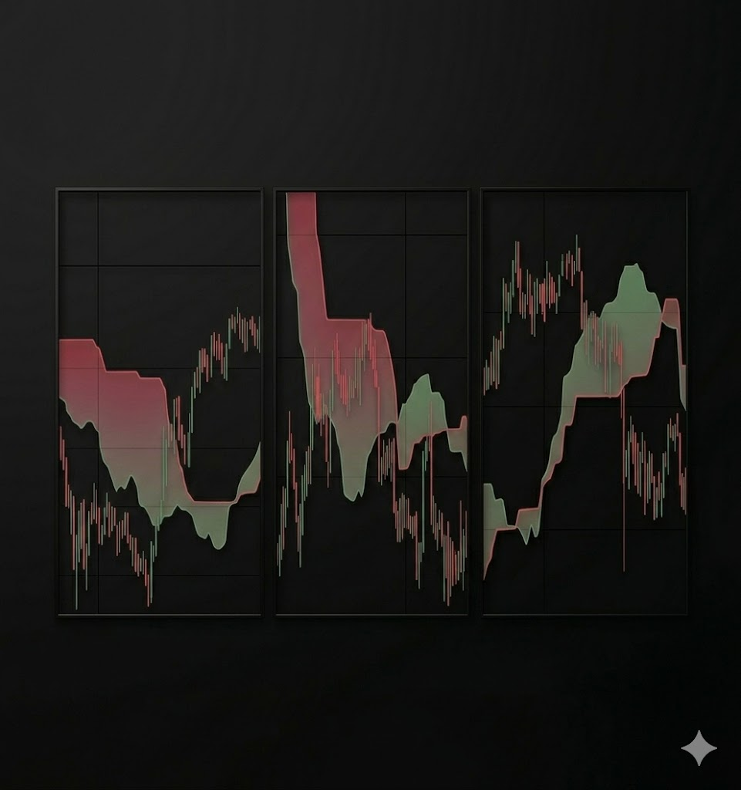

Bollinger Bands
Bollinger Bands
범위 거래 회귀 매매 — 멀티 TF
- 4-tier 진입 룰 (Squeeze · Reversal · 찢어짐 · Proximity)
- HTF 가중치
- BB 밴드 라인 기반 동적 SL
다음 세대 AI Trading의 정의
Defining the Next-Generation AI Trading
Launcher · 자동 업데이트 + 본체 실행 · Bybit Demo Trading
Windows / macOS: ~13 MB 미니 런처 · 첫 실행 시 본체 자동 다운로드 | Android: APK 직접 설치
각 지표는 멀티 타임프레임에서 독립적으로 신호를 산출합니다.
HTF 가중치 기반 점수 합산 + Coinalyze 추세 방향 강제로 진입을 결정합니다.





Windows · macOS · Android 모두 지원
런처 한 번 클릭으로 자동 업데이트 + 본체 실행
Aurora-launcher.exe를 대신 실행하면 새 버전 자동 다운로드 후 본체를 기동합니다.
| 플랫폼 | OS | 최소 사양 |
|---|---|---|
| Windows | Windows 10 / 11 (64-bit) | RAM 4GB · 저장공간 500MB |
| macOS | macOS 12 Monterey 이상 | RAM 4GB · 저장공간 500MB |
| Android | Android 7.0 (API 24) 이상 | RAM 3GB · 저장공간 300MB |